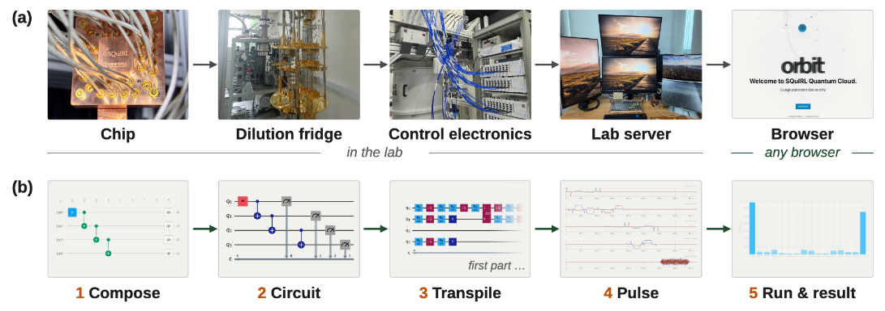

Abstract
- 1Department of Quantum Information Engineering, Sungkyunkwan University, Suwon 16419, Korea
- 2SKKU Advanced Institute of Nano Technology (SAINT), Sungkyunkwan University, Suwon 16419, Korea
- 3Department of Quantum Information Engineering, Sungkyunkwan University, Suwon 16419, Korea
Superconducting qubits are a leading platform for quantum computing. Yet in many labs, a working qubit device is not quite a usable computer. Every algorithm still requires hand-written pulse-level experiment code, and no one outside the lab can reach the device. Our lab designs, fabricates, and characterizes superconducting qubits in-house, using our own quantum fab and dilution fridge. What was missing was the last step, from a measured chip to a QPU that others can use. This led us to develop Orbit (qpu.skku.edu), a cloud platform that connects chips at a few millikelvin to the user’s browser through RF control electronics and a lab server (Fig. 1a). The typical workflow of a program on a quantum computer has three steps. A user composes abstract quantum gates into a quantum circuit, chooses a quantum device, and runs the program to get the results. Orbit shows the user all five layers that a program written in a gate composer, OpenQASM [1], or Qiskit goes through in order (Fig. 1b). The program is confirmed as a valid quantum circuit, transpiled onto our chip’s qubits and native gates, compiled into pulse sequences, and executed over many shots. Orbit also supports state tomography and VQE, which we ran for H2 on our own chip. Orbit has been tested in public through four demos in 2025–2026 on 4- and 6-qubit chips, serving 712 visitors in total.

- A. Cross et al., ACM Trans. Quantum Comput., 3(3), 1–50 (2022).